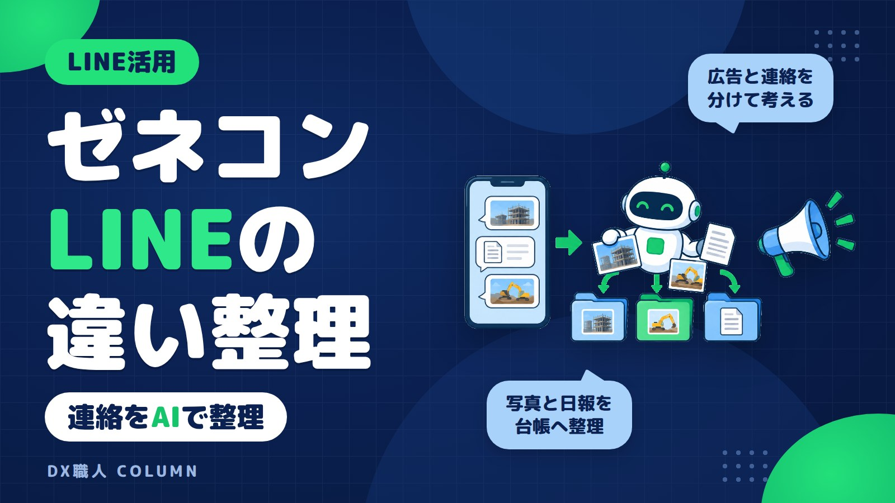
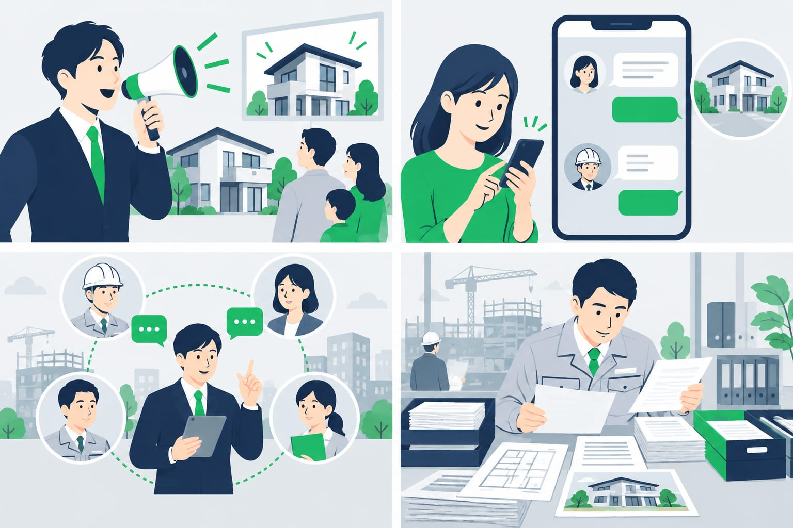
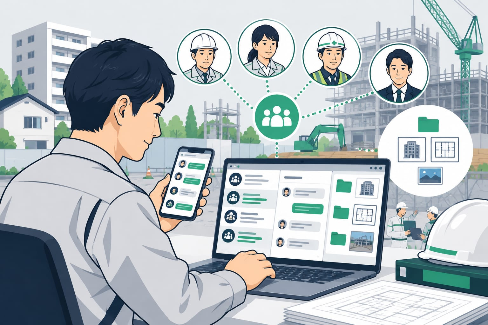

ゼネコンLINE広告と業務連絡の違いをAI活用まで解説
ゼネコンのLINE活用と聞くと、広告なのか、協力会社との連絡なのか分かりにくいことがあります。建設会社では、現場写真や見積依頼がトークに埋もれがちです。この記事では、4つのLINEの使い方の違いと、AIシステムで業務連絡を整理する方法を説明します。

この記事の要点
- 広告と連絡は目的が違う
- LINE WORKSは会社管理向け
- 通常LINEはルールが重要
- AIで写真や日報を台帳化
- 補助金は最新要領で確認
ゼネコンLINE広告と業務連絡は目的が違います

検索でゼネコンのLINEを調べると、広告の話と現場連絡の話が混ざって出てきます。まず、何をしたいのかを分けることが大切です。
| 種類 | 主な目的 | 向いている場面 |
|---|---|---|
| LINE広告 | 見込み客に知らせる | 採用、見学会、販売告知 |
| LINE公式アカウント | お客様との窓口 | 問い合わせ、予約、案内配信 |
| LINE WORKS | 会社管理の連絡網 | 社員や協力会社との連絡 |
| 通常のLINE | すぐ送れる連絡 | 写真、確認、急ぎの相談 |
広告は外へ知らせる道具です。業務連絡は現場や事務所の情報を流す道具です。同じLINEという名前でも、解決する悩みが違います。
建設会社が毎日困りやすいのは、広告よりも連絡の散らばりです。写真、日報、見積依頼、請求のメモがトークに埋もれると、あとで探す時間が増えます。
LINE広告は集客向けで、現場連絡の道具ではありません
LINE広告は、LINE上の広告枠を使って情報を届けるものです。ゼネコンや建設会社では、採用、イベント、モデルルーム、分譲情報の告知などで使われることがあります。
ただし、LINE広告は現場の連絡を片づける道具ではありません。工程変更、資材搬入、是正写真、協力会社への確認は、広告では管理できません。
小さな建設会社では、先に業務連絡を整えたほうが効果を感じやすい場合があります。事務所での打ち直しや、夜の日報確認が減ると、毎日の負担に直結するためです。
もちろん集客が課題なら広告も選択肢です。けれど、業務改善をしたい場合は、LINE広告ではなく連絡の入口と整理方法を見直します。
LINE公式アカウントは問い合わせ窓口に向いています
LINE公式アカウントは、会社とお客様をつなぐ窓口として使いやすい仕組みです。住宅会社ならOB施主への案内、不動産会社なら内見予約や資料請求の受付に向いています。
たとえば、お客様がLINEで写真を送り、修理の相談をする。会社側が内容を確認し、担当者に回す。このような外部向けのやり取りに使えます。
一方で、社員同士の細かい現場連絡を混ぜると管理が難しくなります。お客様対応の履歴と、現場の雑多なメモが同じ場所に入るためです。
問い合わせ窓口として使うなら、お客様対応用と現場連絡用を分けます。AIで整理する場合も、どの入口から来た情報かを分けておくと後処理が楽になります。
LINE WORKSは会社管理の連絡網を作りやすい道具です

LINE WORKSは、仕事用のチャットや連絡網を作るための道具です。通常のLINEよりも、会社側でアカウントやメンバーを管理しやすい点が特徴です。
社員が増えてきた会社や、協力会社との連絡を分けたい会社では便利です。現場ごと、部署ごと、案件ごとにグループを作り、連絡先を整理しやすくなります。
ただし、LINE WORKSを入れれば日報や見積依頼が自動で台帳になるわけではありません。チャットの場所は整っても、写真やメモを誰が拾うかは別問題です。
つまり、LINE WORKSは連絡の箱です。AIシステムは、その箱に入った情報を読み取り、台帳や下書きに整える役目です。両者は目的が違います。
建設業でLINEを業務利用するときの注意点
通常のLINEは、現場で一番使いやすい連絡手段です。職人さんが写真を送る。監督が確認する。事務所が見積の材料にする。この流れは自然です。
ただし、何でも自由に送ると後で困ります。建設業でLINEを業務利用するなら、最低限の決めごとが必要です。
- グループ名に現場名や案件名を入れる
- 最初に現場名、日付、用件を書く
- 写真だけでなく説明を一言添える
- 見積や請求に関係する内容は台帳に移す
- 個人情報や図面の扱いを決める
個人情報、契約内容、図面、鍵番号などは注意が必要です。AIに送る情報の考え方は、AIに入力してよい情報、避けたほうがよい情報でも整理しています。
LINEは便利ですが、探す場所が増えると逆に手間になります。連絡するためのLINEから、残せるLINEへ変えることがポイントです。
建設会社のLINE連絡はAIで台帳化できます
現場のLINE連絡で困るのは、情報が短く、形式がそろわないことです。写真だけ、音声だけ、メモだけという連絡もよくあります。
AIシステムを使うと、LINEに送られた内容を読み取り、必要な項目に分けられます。たとえば、現場名、日付、工種、作業内容、追加依頼、確認待ちなどです。
流れはシンプルです。
- 現場からLINEで写真やメモを送る
- AIが内容を読み取り、項目に分ける
- 日報台帳、見積依頼台帳、対応履歴に整理する
- 足りない情報があれば聞き返す
- 最後に人が確認して確定する
AIの出力は下書きです。見積、請求、施主への連絡は、人が確認してから使います。これにより、打ち直しや探し直しを減らせます。
LINE連絡を散らばらせない考え方は、建設会社のLINE業務利用で写真日報見積を散らばらせない方法でも詳しく書いています。
DX職人ならLINEに送るだけで下書きまで作れます
DX職人のAIシステムは、いつものLINEのトークを入口にできます。新しいアプリを覚えるより、今の連絡の流れをできるだけ変えないことを重視します。
たとえば、現場から次のように送ります。
- 〇〇邸、2階クロス下地、午前作業完了
- 追加で巾木の補修あり、写真3枚
- 明日、材料確認が必要
AIはこの内容を、日報の下書き、追加工事のメモ、翌日の確認事項に分けます。事務所では、ゼロから文章を作るのではなく、下書きを直すだけになります。
見積依頼でも同じです。協力会社から届いた内容をLINEに転送すると、AIが工事内容、数量、期限、不足情報に分けます。足りない情報があれば、確認文の下書きも作れます。
大事なのは、AIに全部任せることではありません。人が判断する前の整理をAIに任せることです。これなら、ITに詳しくない会社でも始めやすくなります。
導入前に決めることと助成金の確認
LINEを使ったAI整理を始める前に、先に決めることがあります。ツール名よりも、日々の流れを決めるほうが大切です。
決めておきたい項目は次の通りです。
- LINEで受ける情報の範囲
- 日報、見積依頼、請求メモの保存先
- AIに読ませない情報
- 下書きを確認する担当者
- 現場で使う送信ルール
AIシステムの導入費用は、内容や連携先で変わります。LINEだけで使うのか、Excelや既存の台帳とつなぐのかでも変わります。
IT導入補助金などを使える場合もあります。ただし、補助金は年度や公募内容で変わります。金額、対象、締切は最新の公募要領で確認が必要です。制度ごとに要件があるので、ご相談の際に確認します。
建設業でLINEのAIシステムを検討する流れは、IT導入補助金で建設業がLINEのAIシステムを導入する流れでも説明しています。DX職人では、現場の連絡方法を聞いたうえで、無理のない形を一緒に整理します。
よくある質問
ゼネコンのLINE広告とLINE業務利用は同じですか？
違います。LINE広告は集客や告知のためのものです。LINE業務利用は、現場写真、日報、見積依頼などをやり取りする使い方です。目的を分けて考える必要があります。
建設会社が通常のLINEを業務で使っても問題ありませんか？
使うこと自体より、ルールがないことが問題になりやすいです。現場名、日付、用件、写真の説明、保存先、個人情報の扱いを決めておくと、後で探しやすくなります。
LINE WORKSを入れれば日報や見積依頼は自動で整理されますか？
LINE WORKSは連絡網を会社で管理しやすくする道具です。日報や見積依頼を台帳化するには、送られた内容を読み取り、項目に分けるAIシステムとの組み合わせが必要です。
LINEで送った現場写真をAIで日報にできますか？
できます。写真に現場名、日付、作業内容などのメモを添えると、AIが日報の下書きに整理できます。最終的な内容は、担当者が確認してから使います。
LINEのAIシステムに補助金は使えますか？
IT導入補助金などを使える場合があります。ただし、年度や公募内容で対象や締切が変わります。最新の公募要領を確認し、制度ごとに要件があるので、ご相談の際に確認します。